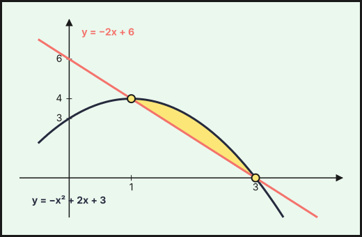
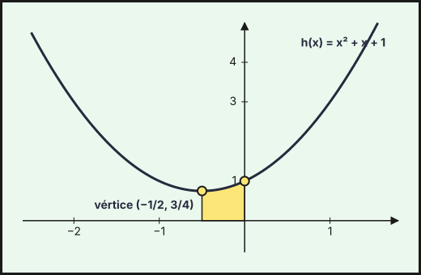

PAU Andalucía — Derivadas
Ejercicios de Matemáticas Aplicadas a las Ciencias Sociales II de la prueba de acceso a la universidad en Andalucía (PAU, antes PEvAU) de 2021 a 2026 cuyo tema principal es derivadas: 6 ejercicios de convocatorias ordinarias y extraordinarias y de sus reservas o suplentes. Repasa antes la teoría, los ejercicios del tema y las actividades interactivas.
Debajo de cada ejercicio hay una resolución breve plegada, con los pasos clave y el resultado: inténtalo antes de abrirla.
2024
Ordinaria · Modelo A 2024
Ejercicio 3 · Ordinaria · Modelo A 2024 · Bloque B · (2,5 puntos) · Examen
- Calcule la derivada de las funciones siguientes: (1,5 puntos)
\[f(x)=\left(x^{2}+2\right)^{3}\cdot e^{-2x}\qquad\qquad g(x)=\frac{\ln\left(1-x^{3}\right)}{\left(1-2x^{2}\right)^{2}}\]
- Halle los valores de \(a\) y \(b\) para que sea horizontal la recta tangente a la gráfica de la función \(h(x)=x^{3}+ax^{2}+3x+b\) en el punto \(P(1,2)\). (1 punto)
Relacionado también con: Aplicaciones de la derivada.
a) \(f'(x)=3\left(x^2+2\right)^2\cdot2x\,e^{-2x}-2\left(x^2+2\right)^3e^{-2x}=2\left(x^2+2\right)^2e^{-2x}\left(3x-x^2-2\right)\).
\(g'(x)=\dfrac{\dfrac{-3x^2}{1-x^3}\left(1-2x^2\right)^2-\ln\left(1-x^3\right)\cdot2\left(1-2x^2\right)(-4x)}{\left(1-2x^2\right)^4}=\dfrac{\dfrac{-3x^2}{1-x^3}\left(1-2x^2\right)+8x\ln\left(1-x^3\right)}{\left(1-2x^2\right)^3}\).
b) \(h'(x)=3x^2+2ax+3\). Tangente horizontal en \(x=1\): \(h'(1)=3+2a+3=0\Rightarrow a=-3\). El punto \(P(1,2)\) está en la gráfica: \(h(1)=1+a+3+b=2\Rightarrow1-3+3+b=2\Rightarrow b=1\).
\(a=-3\) y \(b=1\).
2023
Ordinaria · Reserva · Modelo A 2023
Ejercicio 3 · Ordinaria · Reserva · Modelo A 2023 · Bloque B · (2,5 puntos) · Examen
- Calcule la ecuación de la recta tangente a la gráfica de cada una de las siguientes funciones en el punto de abscisa \(x=0\): (1,5 puntos)
\[f(x)=\frac{3x^{2}+5x-2}{-3x+7}\qquad\qquad g(x)=\ln\left(\frac{1}{3x+1}\right)\]
- Calcule las integrales definidas siguientes: (1 punto)
\[\int_{-2}^{-1}\frac{5}{3x^{4}}\,dx\qquad\qquad\int_{-3}^{0}\frac{e^{x/3}}{5}\,dx\]
Relacionado también con: Integrales.
a) \(f(0)=-\dfrac{2}{7}\) y \(f'(x)=\dfrac{(6x+5)(-3x+7)+3\left(3x^2+5x-2\right)}{(-3x+7)^2}\), con \(f'(0)=\dfrac{35-6}{49}=\dfrac{29}{49}\). Tangente: \(y+\dfrac{2}{7}=\dfrac{29}{49}x\).
\(y=\dfrac{29}{49}x-\dfrac{2}{7}\).
\(g(x)=-\ln(3x+1)\), \(g(0)=0\) y \(g'(x)=-\dfrac{3}{3x+1}\), con \(g'(0)=-3\).
\(y=-3x\).
b) \(\displaystyle\int_{-2}^{-1}\frac{5}{3x^4}\,dx=\frac{5}{3}\left[-\frac{1}{3x^3}\right]_{-2}^{-1}=\frac{5}{3}\left(\frac{1}{3}-\frac{1}{24}\right)=\frac{35}{72}.\)
\(\displaystyle\int_{-3}^{0}\frac{e^{x/3}}{5}\,dx=\frac{3}{5}\left[e^{x/3}\right]_{-3}^{0}=\frac{3}{5}\left(1-e^{-1}\right)=\frac{3}{5}-\frac{3}{5e}.\)
Ordinaria · Reserva · Modelo B 2023
Ejercicio 3 · Ordinaria · Reserva · Modelo B 2023 · Bloque B · (2,5 puntos) · Examen
- Calcule las derivadas de las siguientes funciones: (1,5 puntos)
\[f(x)=\left(-7+x^{2}\right)^{3}\cdot e^{5-x}\qquad\qquad g(x)=\frac{\ln\left(x^{4}-2x^{2}\right)}{8-x^{3}}\]
- Represente gráficamente la región acotada comprendida entre la recta \(y=-2x+6\) y la parábola \(y=-x^{2}+2x+3\) y calcule su área. (1 punto)
Relacionado también con: Integrales.
a) \(f'(x)=3\left(x^2-7\right)^2\cdot2x\cdot e^{5-x}-\left(x^2-7\right)^3e^{5-x}=\left(x^2-7\right)^2e^{5-x}\left(6x-x^2+7\right)\).
\(g'(x)=\dfrac{\dfrac{4x^3-4x}{x^4-2x^2}\left(8-x^3\right)+3x^2\ln\left(x^4-2x^2\right)}{\left(8-x^3\right)^2}\).
b) Los cortes: \(-x^2+2x+3=-2x+6\iff x^2-4x+3=0\iff x=1\) o \(x=3\), en los puntos \((1,4)\) y \((3,0)\). En \([1,3]\) la parábola (vértice \((1,4)\), abierta hacia abajo) queda por encima de la recta. \[A=\int_1^3\left[\left(-x^2+2x+3\right)-\left(-2x+6\right)\right]dx=\int_1^3\left(-x^2+4x-3\right)dx=\left[-\frac{x^3}{3}+2x^2-3x\right]_1^3=0-\left(-\frac{4}{3}\right)=\frac{4}{3}.\] \(A=\dfrac{4}{3}\ \text{u}^2\)

2022
Ordinaria · Reserva 2022
Ejercicio 4 · Ordinaria · Reserva 2022 · Bloque B · (2,5 puntos) · Examen
Se considera la función \(f(x)=3x^{3}-6x^{2}+5\).
Obtenga las ecuaciones de las rectas tangentes a \(f\) que sean paralelas a la recta de ecuación \(y=-3x+1\). (1,5 puntos)
Calcule la función \(F\) que verifique que \(F'(x)=f(x)\) y \(F(2)=4\). (1 punto)
Relacionado también con: Integrales.
a) Pendiente \(-3\): \(f'(x)=9x^2-12x=-3\iff3x^2-4x+1=0\iff x=1\) o \(x=\dfrac{1}{3}\).
- \(x=1\): \(f(1)=2\) y tangente \(y-2=-3(x-1)\), \(y=-3x+5\).
- \(x=\dfrac{1}{3}\): \(f\left(\frac{1}{3}\right)=\dfrac{40}{9}\) y tangente \(y-\dfrac{40}{9}=-3\left(x-\dfrac{1}{3}\right)\), \(y=-3x+\dfrac{49}{9}\).
b) \(F(x)=\displaystyle\int\left(3x^3-6x^2+5\right)dx=\frac{3x^4}{4}-2x^3+5x+K\). Con \(F(2)=12-16+10+K=4\) resulta \(K=-2\).
\(F(x)=\dfrac{3x^4}{4}-2x^3+5x-2\).
2021
Ordinaria 2021
Ejercicio 4 · Ordinaria 2021 · Bloque B · (2,5 puntos) · Examen
- Calcule la derivada de las siguientes funciones: (1 punto)
\[f(x)=\ln\left(\frac{x-1}{x+1}\right)\qquad\qquad g(x)=x^{3}\cdot e^{2x^{2}}\]
Represente gráficamente la parábola \(h(x)=x^{2}+x+1\), indicando el vértice y los puntos de corte con los ejes coordenados. (0,7 puntos)
Calcule el área del recinto limitado por la gráfica de \(h(x)=x^{2}+x+1\), el eje de abscisas y las rectas \(x=-\dfrac{1}{2}\) y \(x=0\). (0,8 puntos)
Relacionado también con: Funciones, Integrales.
a) \(f(x)=\ln(x-1)-\ln(x+1)\), luego \(f'(x)=\dfrac{1}{x-1}-\dfrac{1}{x+1}=\dfrac{2}{x^2-1}\).
\(g'(x)=3x^2e^{2x^2}+x^3\cdot4x\,e^{2x^2}=x^2e^{2x^2}\left(3+4x^2\right)\).
b) \(h'(x)=2x+1=0\Rightarrow x=-\dfrac{1}{2}\): vértice \(\left(-\dfrac{1}{2},\dfrac{3}{4}\right)\). Con el eje \(OX\) no corta (\(\Delta=1-4=-3<0\)) y con el eje \(OY\) corta en \((0,1)\). Es una parábola abierta hacia arriba, simétrica respecto de \(x=-\dfrac{1}{2}\), que pasa también por \((-1,1)\).

c) Como \(h>0\), el área es \[\int_{-1/2}^{0}\left(x^2+x+1\right)dx=\left[\frac{x^3}{3}+\frac{x^2}{2}+x\right]_{-1/2}^{0}=0-\left(-\frac{1}{24}+\frac{1}{8}-\frac{1}{2}\right)=\frac{5}{12}.\] \(A=\dfrac{5}{12}\ \text{u}^2\)
Ordinaria · Reserva 2021
Ejercicio 4 · Ordinaria · Reserva 2021 · Bloque B · (2,5 puntos) · Examen
- Calcule la derivada de las siguientes funciones: (1 punto)
\[f(x)=\left(5x^{3}+4x-2\right)^{4}\cdot\ln\left(2x^{5}-4x^{3}+x\right)\qquad\qquad g(x)=\frac{e^{3x^{2}-5x}}{\left(6x^{2}+2\right)^{3}}\]
- Halle la función \(h(x)\), sabiendo que su derivada es \(h'(x)=4x^{3}+x^{2}-4x-1\) y que \(h(2)=\dfrac{11}{3}\). (1,5 puntos)
Relacionado también con: Integrales.
a) \(f'(x)=4\left(5x^3+4x-2\right)^3\left(15x^2+4\right)\ln\left(2x^5-4x^3+x\right)+\left(5x^3+4x-2\right)^4\dfrac{10x^4-12x^2+1}{2x^5-4x^3+x}.\)
\(g'(x)=\dfrac{e^{3x^2-5x}(6x-5)\left(6x^2+2\right)^3-e^{3x^2-5x}\cdot3\left(6x^2+2\right)^2\cdot12x}{\left(6x^2+2\right)^6}=\dfrac{e^{3x^2-5x}\left(36x^3-30x^2-24x-10\right)}{\left(6x^2+2\right)^4}.\)
b) \(h(x)=\displaystyle\int\left(4x^3+x^2-4x-1\right)dx=x^4+\frac{x^3}{3}-2x^2-x+C\). Con \(h(2)=16+\dfrac{8}{3}-8-2+C=\dfrac{11}{3}\) resulta \(C=-5\).
\(h(x)=x^4+\dfrac{x^3}{3}-2x^2-x-5\).
También trabajan este tema
Ejercicios cuyo tema principal es otro pero en los que aparece este tema:
- 2026 Ordinaria, ejercicio 2 (tema principal: Límites y continuidad)
- 2026 Ordinaria · Suplente 1, ejercicio 2A (tema principal: Límites y continuidad)
- 2026 Ordinaria · Suplente 1, ejercicio 2B (tema principal: Funciones)
- 2026 Extraordinaria · Suplente 1, ejercicio 2B (tema principal: Límites y continuidad)
- 2026 Extraordinaria · Suplente 2, ejercicio 2 (tema principal: Funciones)
- 2025 Ordinaria · Modelo B, ejercicio 3 (tema principal: Funciones)
- 2025 Ordinaria · Suplente 1 · Modelo A, ejercicio 3 (tema principal: Límites y continuidad)
- 2025 Ordinaria · Suplente 1 · Modelo A, ejercicio 4 (tema principal: Aplicaciones de la derivada)
- 2025 Ordinaria · Suplente 1 · Modelo B, ejercicio 3 (tema principal: Funciones)
- 2025 Ordinaria · Suplente 2 · Modelo A, ejercicio 3 (tema principal: Aplicaciones de la derivada)
- 2025 Ordinaria · Suplente 2 · Modelo A, ejercicio 4 (tema principal: Límites y continuidad)
- 2025 Ordinaria · Suplente 2 · Modelo B, ejercicio 3 (tema principal: Funciones)
- 2024 Ordinaria · Modelo A, ejercicio 4 (tema principal: Límites y continuidad)
- 2024 Ordinaria · Modelo B, ejercicio 3 (tema principal: Límites y continuidad)
- 2024 Ordinaria · Modelo B, ejercicio 4 (tema principal: Límites y continuidad)
- 2024 Ordinaria · Reserva · Modelo A, ejercicio 3 (tema principal: Integrales)
- 2024 Ordinaria · Reserva · Modelo A, ejercicio 4 (tema principal: Límites y continuidad)
- 2024 Ordinaria · Reserva · Modelo B, ejercicio 3 (tema principal: Límites y continuidad)
- 2024 Ordinaria · Suplente · Modelo A, ejercicio 4 (tema principal: Límites y continuidad)
- 2024 Ordinaria · Suplente · Modelo B, ejercicio 3 (tema principal: Funciones)
- 2024 Ordinaria · Suplente · Modelo B, ejercicio 4 (tema principal: Límites y continuidad)
- 2023 Ordinaria · Modelo B, ejercicio 4 (tema principal: Funciones)
- 2023 Ordinaria · Reserva · Modelo A, ejercicio 4 (tema principal: Límites y continuidad)
- 2023 Ordinaria · Suplente · Modelo A, ejercicio 4 (tema principal: Límites y continuidad)
- 2023 Ordinaria · Suplente · Modelo B, ejercicio 3 (tema principal: Límites y continuidad)
- 2022 Ordinaria, ejercicio 3 (tema principal: Aplicaciones de la derivada)
- 2022 Ordinaria, ejercicio 4 (tema principal: Límites y continuidad)
- 2022 Ordinaria · Suplente, ejercicio 4 (tema principal: Límites y continuidad)
- 2022 Extraordinaria · Reserva, ejercicio 3 (tema principal: Límites y continuidad)
- 2022 Extraordinaria · Reserva, ejercicio 4 (tema principal: Funciones)
- 2022 Extraordinaria · Suplente, ejercicio 4 (tema principal: Límites y continuidad)
- 2021 Ordinaria · Reserva, ejercicio 3 (tema principal: Límites y continuidad)
- 2021 Ordinaria · Suplente, ejercicio 3 (tema principal: Límites y continuidad)
- 2021 Ordinaria · Suplente, ejercicio 4 (tema principal: Aplicaciones de la derivada)
- 2021 Extraordinaria, ejercicio 3 (tema principal: Límites y continuidad)
- 2021 Extraordinaria, ejercicio 4 (tema principal: Límites y continuidad)
- 2021 Extraordinaria · Reserva, ejercicio 3 (tema principal: Límites y continuidad)
- 2021 Extraordinaria · Suplente, ejercicio 3 (tema principal: Límites y continuidad)
- 2021 Extraordinaria · Suplente, ejercicio 4 (tema principal: Aplicaciones de la derivada)
Enunciados: Prueba de Acceso y Admisión a la Universidad (PEvAU hasta 2024, PAU desde 2025), Matemáticas Aplicadas a las Ciencias Sociales II, Andalucía, Ceuta, Melilla y centros en Marruecos (Distrito Único Andaluz). Cada ejercicio enlaza al PDF oficial del examen completo. La clasificación por temas es propia y puede discutirse: los ejercicios mixtos figuran en su tema principal.